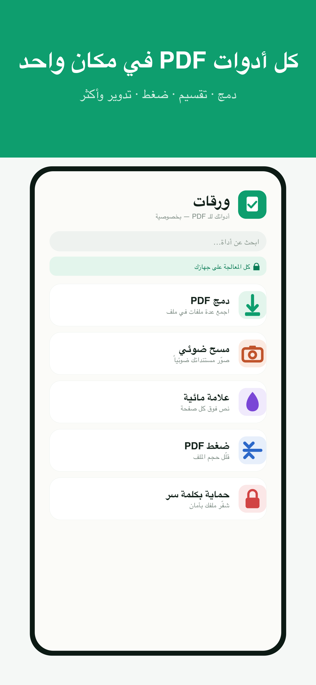
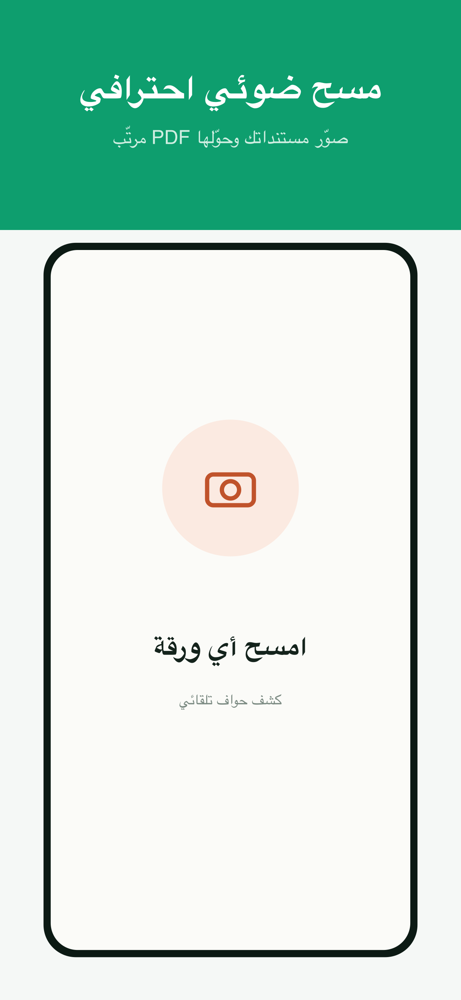
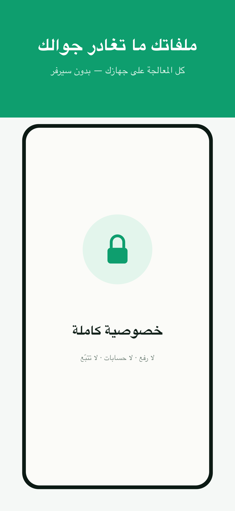

ادمج، قسّم، اضغط، امسح ضوئياً، وقّع بعلامة مائية، واحمِ ملفاتك — كل ذلك بدون ما يغادر أي ملف جوالك.
أدوات كاملة منظّمة بذكاء — كلها تعمل على جهازك مباشرة، بسرعة وبدون إنترنت.
معظم تطبيقات الـ PDF ترفع ملفاتك إلى خوادمها. ورقات لا يفعل — أبداً.
الدمج، الضغط، المسح الضوئي، الحماية — كل العمليات تتم داخل جوالك. لا يُرفع أي ملف إلى أي خادم، ويعمل التطبيق حتى بدون إنترنت.
واجهة عربية كاملة (يمين لليسار)، وإنجليزية، وفرنسية — تتكيّف تلقائياً مع لغة جهازك واتجاهها.
اكتشاف حواف تلقائي، تصحيح للميلان، وتحسين للوضوح — يحوّل صور مستنداتك إلى PDF نظيف كأنه من ماسح حقيقي.
كل الأدوات متاحة مجاناً — بدون اشتراكات، بدون إعلانات، وبدون أدوات تتبّع أو تحليلات من أي طرف ثالث.
واجهة هادئة ومنظّمة تجعل كل مهمة تنتهي بضغطتين.


